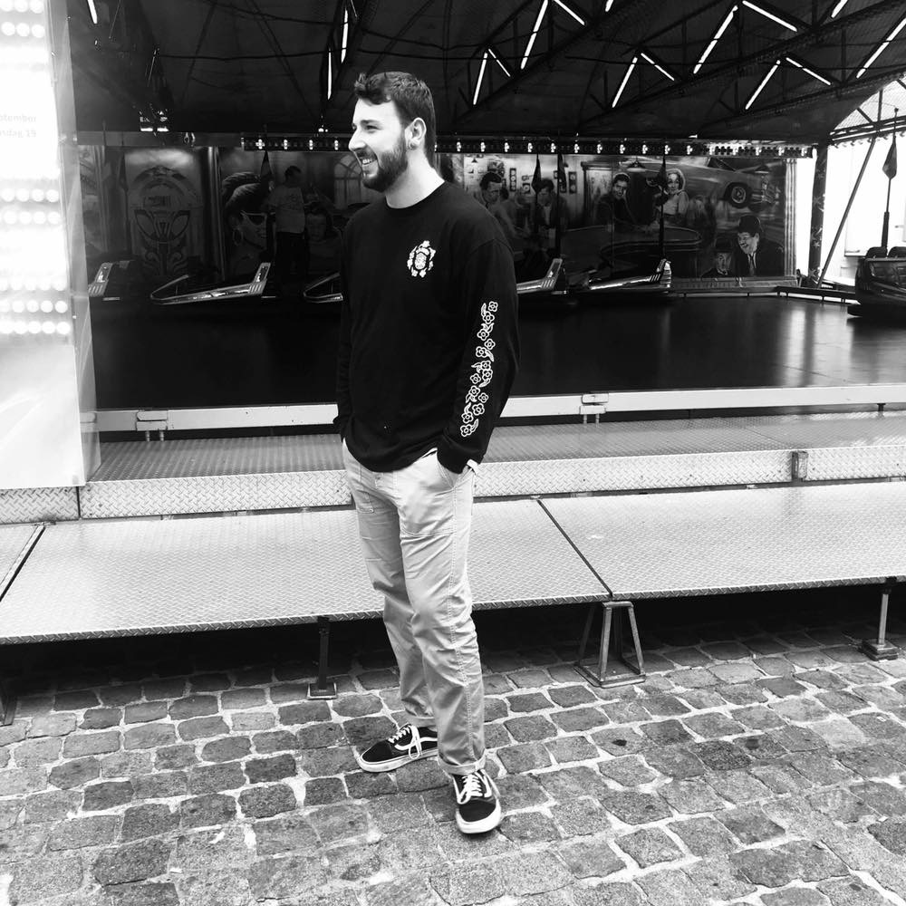

<!doctype html>
<html>

	<head>
		<!-- Global site tag (gtag.js) - Google Analytics -->
<script async src="https://www.googletagmanager.com/gtag/js?id=UA-126740481-1"></script>
<script>
  window.dataLayer = window.dataLayer || [];
  function gtag(){dataLayer.push(arguments);}
  gtag('js', new Date());

  gtag('config', 'UA-126740481-1');
</script>
<meta charset="UTF-8">
<title>Over mij</title>

<body bgcolor="c#755252">
	
    </body>

<ul>
	<nav>
		<a href="index.html"><li><em>Home</em></li></a>
		<a href="Schilderijen 1.html"><li>Schilderij</li></a>
										 <em>Over mij</em>
										 </nav></a>
	<nav>
		<a href="Contact.html"><li>Contact</li></a>
	</nav>
							  <br></a>
</ul>
    </head>
	<p align="left">Ik ben Thorsten Staes en <br> student aan LUCA school of arts <br> te Gent.</p><p align="right"></p>
													
</html>
